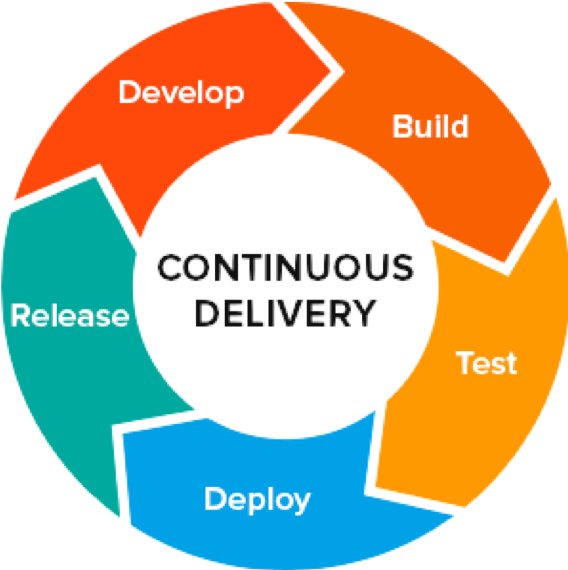
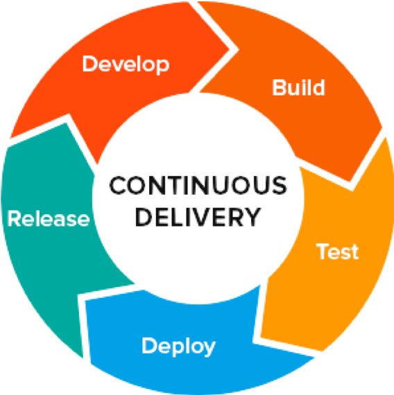
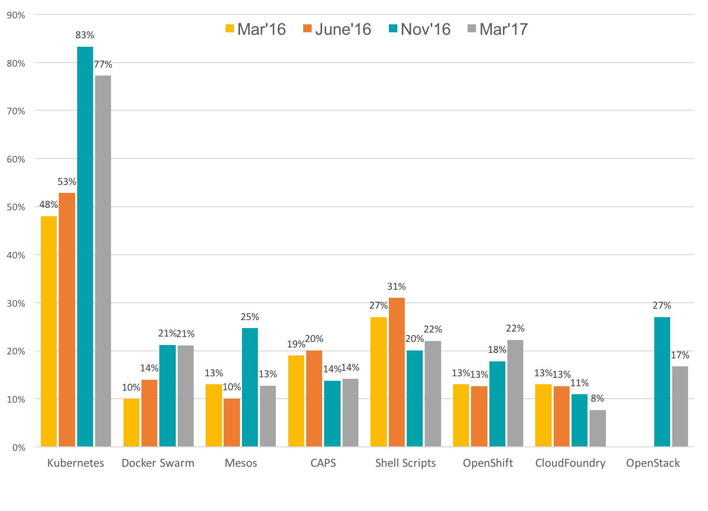

DevOps Workshop
Justin ChaoDay 1 Topics
What is DevOps?
What are containers?
Pre-requisites
- Some familiarity with using the Terminal
- VirtualBox installed
- Vagrant installed
Agile - CI/CD - DevOps
 

containers

Container Advantages
- Portable
- Isolated
- Lighter footprint & overhead (vs VMs)
- Simplify DevOps practices
- Speed up Continuous Integration
- Empower Microservices architectures & adoption
Docker Container Platform

It's time to code!
Day 2 Topics
How do you manage multiple containers?
Continuous Integration & Continuous Delivery (CI/CD) Pipelines
Pre-requisites
- Some familiarity with using the Terminal
- VirtualBox installed
- Vagrant installed
- Understanding of containers and Docker
Challenges with multiple containers
- How do you scale?
- How to do maintain observability of all your containers and replicas?
- How do your microservice containers find each other?
- How do you manage port conflicts?
- What if a host fails? How do you manage health checks?
- How do you provide seamless updates?
- How do you manage and track logs?
Container Orchestration
- Deploy and Configure
- Fault Isolation & Healing
- Secure
- Upgrades
- Scaling Up and Down
Container Orchestration Tools
- Kubernetes ("k8s")
- Docker Swarm
- Mesos
Kubernetes has become the unofficial standard.
Container Management Platforms Preferences
Kubernetes Stats
- 78k+ Commits
- 511+ Releases
- 2000+ Contributers
Kubernetes Features
- Co-locating helper processes, facilitating composite applications and preserving the one-application-per-container model
- Mounting storage systems
- Distributing secrets
- Checking application health
- Replicating application instances
- Using Horizontal Pod Autoscaling
- Naming and discovering
- Balancing loads
- Rolling updates
- Monitoring resources
- Accessing and ingesting logs
- Debugging applications
- Providing authentication and authorization
Kubernetes Architecture